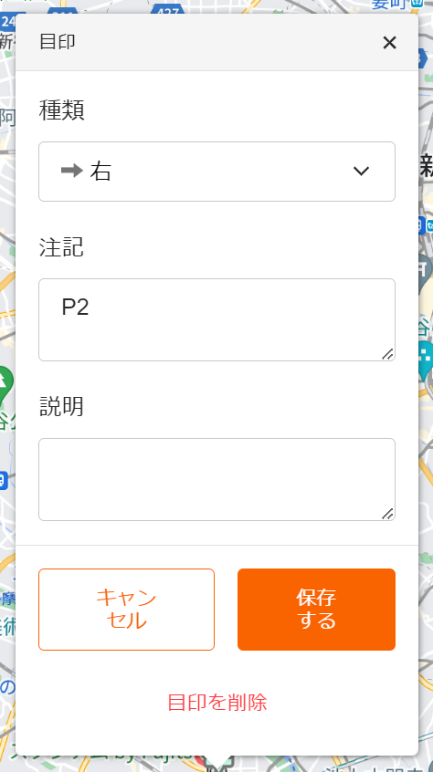
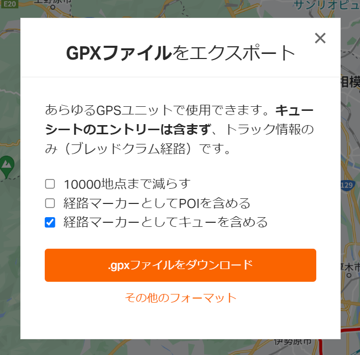

Ride With GPSが生成したキューシート付きGPXファイルをAndroid用オフラインマップアプリ（有料）であるOruxmaps GPで適切にナビゲートさせるための変換サイトです。
Ride With GPSのキュー情報（目印）では「種類」として適切な方向指示やCP情報を入力します。「注記」の情報はOruxmapsの「説明」に変換します。Oruxmapsで「説明」を発話する設定にすれば方向指示情報とともにしゃべります。
以下のようにRide With GPSの「種類」情報をOruxmapsの指示情報に変換します。一対一に変換できないものがあります。ブルベでは「全速力」ポイントは使わないと思って「写真」に変換しています。
| Ride With GPS(WEB上の表記) | Ride With GPS(in gpx) | Oruxmaps |
|---|---|---|
| 左 | Left | 左 |
| 右 | Right | 右 |
| 少し左に | Slight Left | やや左 |
| 少し右に | Slight Right | やや右 |
| 鋭く左に | Sharp Left | 左に急カーブ |
| 鋭く右に | Sharp Right | 右に急カーブ |
| まっすぐ | Straight | そのまま進行 |
| Uターン | Uturn | リターン |
| 頂上 | Summit | 頂上 |
| 水 | Water | 水飲み場 |
| 食べ物 | Food | レストラン |
| 危険 | Danger | 危険地帯 |
| 応急手当 | First Aid | 救急車 |
| 管理する | Control | 情報案内 |
| 一般 | Generic | ポイント |
| 全速力 | Sprint | 写真 |
Ride With GPSのGPX Export時に「経路マーカーとしてキューを含める」を有効にして保存してください。このファイルを上記のファイル選択機能、またはドロップエリアにドラッグアンドドロップすると変換ファイルのダウンロードリンクが生成されます。これをクリックして改めてダウンロードし、これをOruxmapsの経路ファイルとして読み込んでください。
指定されたファイルがgpxファイルと判断できなかった場合「ファイル is NOT a gpx file.」と表示します。変換箇所が見つからない場合は「ファイル is NOT modified.」と表示します。
変換後のキューシート情報を日本語で保存するため、Oruxmapsの日本語以外の設定では正常に動作しないと思われます（未確認）。
選ばれたGPXファイルの変換処理はブラウザ内で行い、別サーバーなどへ送信されません。